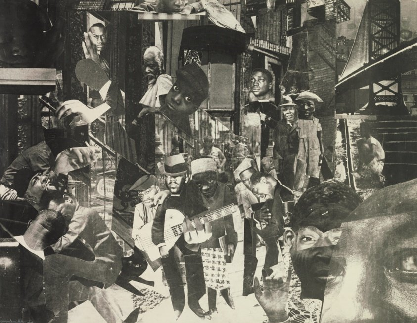

The Street
Romare Bearden · 1964 · Photostat print · 78.7 × 101.6 cm · Art Institute of Chicago
In copyright. Look and learn: shown for study, not for download.
The Street belongs to Projections, the series Romare Bearden began in 1963 or 1964 by cutting images from magazines and newspapers, altering them with sandpaper, bleach, graphite or paint, and enlarging the small collages with the Photostat copy process. He made twenty-one of these large black-and-white works. They were first shown at the Cordier & Ekstrom gallery in New York in October 1964, which led to a solo show at the Corcoran Gallery the next year. Bearden had been brought to Harlem as a toddler from Charlotte, North Carolina.